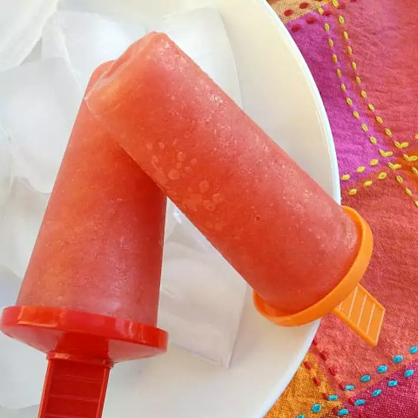

Watermelon Ice Pops

Description
Cool and refreshing, with no artificial colors or flavors! If you don't have ice pop molds, you can use paper cups and wooden sticks.
Ingredients
- 1½ cups watermelon, seeded and diced
- ½ cup water
- 1 tablespoon honey
- 1 tablespoon fresh lemon juice
Steps
- Blend watermelon, water, honey, lemon juice, and sugar together in a blender until smooth. Pour mixture into ice pop molds and freeze until solid, about 2 hours.
- Run hot water over ice pop molds for a few seconds to unmold.